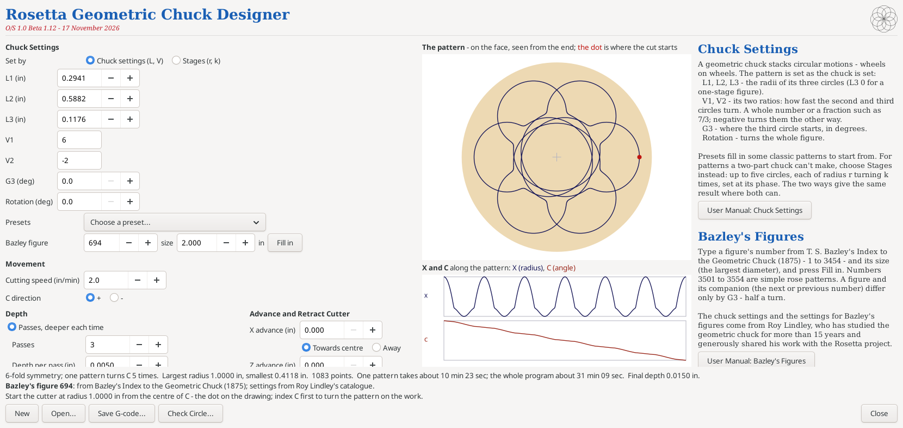

A geometric chuck stacks circular motions - wheels on wheels - to cut looping, star-like and lobed patterns on the face of the work (see the Ornamental Turning Book of Knowledge's Geometric Chuck page). The Geometric Chuck Designer makes a software geometric chuck: you set it up as you would a two-part geometric chuck - or choose one of T. S. Bazley's 3,400 figures by its number - see the pattern it makes, and it saves a G-code program in which C turns the work while X moves the cutter in and out to trace that pattern on the face.
Use it to try patterns before cutting them, or to cut patterns without a geometric chuck at all.
Acknowledgement: The chuck settings, and the settings for every one of Bazley's figures, come from Roy Lindley, who has studied the geometric chuck for more than 15 years and generously shared his work with the Rosetta project. Thank you, Roy.
|  |
Opening the Geometric Chuck Designer

- Click on Applications at the top left corner of the screen.
- Click on the arrow to the right of Rosetta.
- Click on Geometric Chuck Designer.
The Geometric Chuck Designer only writes G-code files, so it can be open while Rosetta is running.
Only one Geometric Chuck Designer window can be open. If one is already open, for example behind Rosetta, opening it again brings that window to the front, with a message saying it was already open.
Designing a Pattern
The Geometric Chuck Designer fills the screen, like the Rosette Designer. The drawings in the middle change as you change the settings on the left, and the notes on the right explain each section, with a button that opens this page at that section. The drawings:
- The pattern shows the cut on the face of the work, seen from the end. The red dot is where the cut starts.
- X and C shows how X (the cutter's radius) and C (the angle) move along the pattern.
Chuck Settings
A two-part geometric chuck adds three circles together, each turning at its own speed. The pattern is where they add up. Set by chooses how you enter them:
- Chuck settings (L, V) - as you would set a geometric chuck (below). This is the usual way.
- Stages (r, k) - the circles one by one, for patterns a two-part chuck can't make (see Stages, below).
The two give the same pattern where both can make it, and switching between them keeps the pattern.
| L1, L2, L3 |
The radii of the three circles, in inches (or mm). Leave L3 at 0 for a one-stage pattern. |
| V1, V2 |
The chuck's two ratios - how fast the second and third circles turn: the second turns 1 - V1 times for each turn of the first, and the third (1 - V1) + V1 × V2 times. A whole number (6), a negative number (-4) or a fraction (7/3). V2 only matters when L3 isn't 0. If you type something that isn't a number, the box turns red and the note under the drawings says so; the last good value is used until you correct it. |
| G3 |
Where the third circle starts, in degrees. Changing it changes the pattern: a figure and its companion differ only by G3 = 0 or 180. |
| Rotation |
Turns the whole figure, in degrees. (Indexing C on the Rosetta panel before running the program does the same.) |
| Presets |
Fills in a classic pattern to start from: an ellipse, 5 lobes, a 5-point star, loops through the centre, a pattern that closes after 3 turns, a three-circle pattern, and 3 petals through the centre. |
Choosing V1. With two circles (L3 = 0), the pattern has |V1|-fold symmetry:
- V1 = -n gives n broad lobes with small loops - for example, V1 = -5 gives 5 lobes.
- V1 = n gives an n-point star - for example, V1 = 5 gives a 5-point star.
- V1 = 2 gives an exact ellipse: half its length is L1 + L2, half its width L1 - L2.
- A fraction such as -4/3 makes a pattern that takes 3 turns to close.
The third circle (L3, V2) adds smaller loops on top of the pattern.
Bazley's Figures
T. S. Bazley's Index to the Geometric Chuck (1875) shows over 3,400 numbered figures, with the chuck settings for each. To cut one:
- Type the figure's number in Bazley figure.
- Type its size - the figure's largest diameter.
- Press Fill in. The chuck settings are set to cut that figure at that size, and the note under the drawings names the figure and its companion.
The numbers are:
- 1 to 200 - Bazley's one-stage figures.
- 220 to 3454 - his two-stage figures.
- 3501 to 3554 - simple rose patterns (L1 and L2 the same), added by Roy Lindley.
Bazley's figures come in companions - pairs with the same settings, except that the third circle starts half a turn round (G3 = 0 or 180). They are numbered one after the other, and look quite different.
If you change a setting afterwards (other than Rotation), the pattern is no longer Bazley's figure, and the note no longer names it.
Note: The settings for Bazley's figures are from Roy Lindley's catalogue (see Acknowledgement, above).
Stages
With Set by at Stages (r, k), there are 5 circles, entered one by one. Each turns a circle of radius r, k times for each turn of the first, set at its Phase to start. Leave r at 0 for a stage you don't use. Use it for patterns a two-part chuck can't make - for example, four or five circles.
| r |
The stage's offset - the radius of its circle. |
| k |
How many times the stage turns for each turn of the first: a whole number (6), a negative number for the other way (-4), or a fraction (7/3). Stage 1 is normally k = 1. |
| Phase |
Where the stage is set at the start, in degrees. |
Switching back to Chuck settings keeps the pattern when a two-part chuck can make it. When it can't - more than three circles, stage 1 not at k = 1, or stages 1 and 2 at different phases - the Designer asks first, and the chuck settings replace the stages.
Movement
| Cutting speed |
How fast the cutter moves along the pattern, in inches (or mm) per minute. C slows down where it, or X, can't keep up - most where the pattern passes close to the centre, where C has to turn fast. The note under the drawings gives the time. |
| C direction |
Which way C turns: + or -. The other way cuts the pattern's mirror image. |
Depth
Choose one:
| Passes, deeper each time |
The program cuts the pattern several times, going Depth per pass deeper before each pass, at the Plunge feed. The first pass is already one step deep, so put the cutter just touching the work. At the end, the cutter backs out to where it started. Finishing pass: tick it to run the last pass slower, for a better finish - at a percentage of the Cutting speed (10% to start). The earlier passes run at full speed. Spring passes: 0 to 5 extra times round at the final depth, to clean up the cut. They run at the finishing speed when Finishing pass is ticked. |
| Times at one depth |
The program cuts the pattern the chosen number of times without going deeper. To go deeper, move the cutter in yourself and run the program again. |
Deeper is +: normally the cutter goes deeper by moving Z in its minus direction. Tick this if going deeper means moving it in its plus direction.
Advance and Retract Cutter
To start the cutter clear of the work, set how far it moves in before cutting - X advance, Z advance or both - and which way: Towards centre or Away for X, Towards headstock or Away for Z. Leave both at 0 for no advance.
- Put the cutter that far clear of where the pattern is to be cut.
- Run the program. The cutter moves in at the Plunge feed - Z last, so it enters the work straight in.
- The passes are cut from there - their depth is measured from where the advance ends.
- At the end, the cutter moves back out to exactly where you put it, Z first.
Do not run the program until you have checked each advance's direction. The cutter moves the whole advance distance that way before it starts cutting - set the wrong way, it moves into the work instead of up to it.
Note: If the program is stopped part way, the cutter is left where it stopped - it moves back out only at the normal end.
Notes Under the Drawings
Under the drawings, the Geometric Chuck Designer gives:
- the pattern's symmetry, and how many times one pattern turns C;
- its largest and smallest radius;
- how long one pattern and the whole program will take (counting a slower finishing pass);
- the radius to start the cutter at.
- for a Bazley figure, its number and its companion.
It warns you when:
- the pattern passes through the centre, and how far X moves past C's axis (see below);
- C or X can't keep up at the cutting speed, so the cut slows down where it must;
- C, X or Z isn't assigned to a channel in Axis Selection - the program won't run until it is;
- a V or a k isn't a number.
Setting the Start Radius: Check Circle
The program moves the cutter from wherever it is put, so the cutter's distance from C's axis - the start radius the note under the drawings gives - sets the pattern's size and shape. That distance is hard to measure, especially when the headstock moves. The Check Circle... button makes it easy: it saves a small program that turns C once with X and Z standing still, so the cutter draws a circle round C's axis. The circle's diameter is twice the cutter's radius.
- Press Check Circle.... It saves a program named for the size the circle should be, for example Check-Circle_2.500in.ngc, in the gcode folder, and offers to open it in Rosetta.
- Put the cutter just touching the work, where the cut will start.
- Run the check circle program, and measure the circle's diameter.
- If the circle is smaller than it should be, move X out by half the difference; if it is bigger, move X in. For example, if a circle that should be 3" across comes out 2 1/8", move X out by 7/16".
- Run the check circle again, until it is the right size.
- Open the pattern program and run it, without moving X.
Note: with an X advance, set the circle first, then move X by the advance, as the check circle's message says, before running the pattern.
Note: the check circle cuts a light circle in the work. On a paper chuck that doesn't matter; on finished work, set the radius on a scrap piece first.
Note: the check circle works on any machine - see Working from Where the Cutter Starts in the Ornamental Turning Book of Knowledge.
Saving and Running the Program
- Press Save G-code.... The Geometric Chuck Designer suggests a name, such as GeoChuck-5fold_k6_face.ngc, in the gcode folder.
- If Rosetta is running, the Geometric Chuck Designer offers to open the program in Rosetta. Otherwise, open it in Rosetta with File > Open.
- Index C to turn the pattern where you want it on the work - the red dot on the drawing is where the cut starts.
- Put the cutter at the radius the note under the drawings gives, measured from the centre of C - use the check circle. Do not start the program until the cutter is at that radius. The program moves the cutter from wherever it is put, so started anywhere else the pattern comes out a different shape.
- Run the program.
Do not run a pattern that passes through the centre until you have checked that X can travel past C's axis by the distance the note gives. To cut through the centre, the cutter crosses to the other side of the axis. If X can't travel that far, make the pattern smaller (smaller L's, a smaller Bazley size, or smaller r's).
Note: while the program runs, the progress bar on the Rosetta panel shows which pass it is on, for example Program 42% - pass 2 of 3.
Do not name the program starting with "Rosetta", and do not name it M100 through M199. Those names are reserved (see Running Gcode Programs), and the Geometric Chuck Designer refuses them.
Note: C is not turned back at the end, so after several passes C may read thousands of degrees. The work is in the same place, and the next program again works from wherever C is.
Changing a Saved Pattern
Press Open... and choose a program the Geometric Chuck Designer saved. Its settings come back, ready to change and save again.
The Geometric Chuck Designer also remembers every setting of the last pattern you worked on, so it opens the way you left it. Press New to start again from the standard pattern.
Note: only programs saved by the Geometric Chuck Designer can be opened this way.